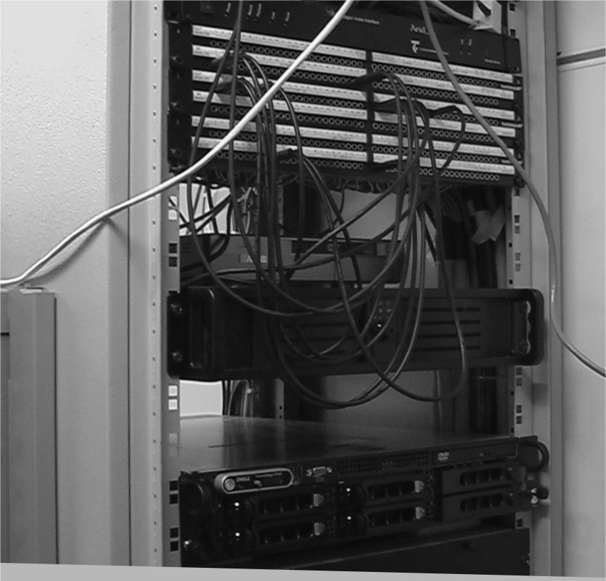

| Chapter1.Pd 介绍 | ||
|---|---|---|
|
| /th> |
|
| Chapter1.Pd 介绍 | ||
|---|---|---|
|
| /th> |
|
目 录
Pd (Pure Data) is a programming language for electronic music. Creating music on a computer is technically referred to as DSP (digital signal processing). "Digital" means that information is represented by digits — computers, as you may know, work only with numbers. "Signal" is the technical term for a special mode of computer operation that deals with sound. "Processing" refers to functions executed by the computer.
Pd was initiated by American software engineer Miller Puckette, who previous co-developed the well known and similarly structured software Max/Msp. Pd is not commercial software; i.e., it was not developed by a corporation and is not for sale. Instead, it is "open source": its source code can be viewed by anyone. This source code is also not the (patented) property of a corporation, but is rather freely available to all. This also means that, provided sufficient knowledge, anyone can change the program. Today, many other programmers, musicians, acoustic engineers, and composers have joined Miller Puckette to continue Pd's development. As a result of this, there is no final, definitive version of Pd; the program is under constant development. In addition to the huge advantage of free availability on the Internet, it is also "democratically" expanded and optimized on a professional level. One drawback to this is that a detailed operating manual for users who lack programming experience has not existed until now. In contrast to a corporation, which has a monetary interest in ensuring that first-time users can easily operate new software, the open source movement lacks such a driving force to make itself accessible. This book is an attempt to fill that gap.
In precise terms, Pd is a "real-time graphical programming environment for audio processing". Traditionally, programmers work with text-based programming languages. They create what is called "code", which is processed by a computer to produce a result. To carry out its programming functions, Pd uses visual objects that the user places and alters on the screen. These visual objects — small boxes that can be connected to each other — are a throwback to analogue studios that were used to produce electronic music before the advent of computers: various devices — today symbolized by our little boxes — are connected to each other using lines that — like cables — symbolize physical connections between the boxes. (Due to this type of connection, Pd is referred to as a datastream-oriented programming language.)
|  |
One major advantage of Pd is the aspect of "real-time". This means that, in contrast to most programming environments where a text is first entered that must be separately processed by the computer before obtaining a result, changes in Pd can be made during performance. Like on a classical instrument, the user hears the result instantaneously and can change it immediately. This makes Pd especially well suited for use in live performance.
Pd has become much more than a programming language for electronic music. Since users across the globe can participate in the project, there are user-programmed modules for what are called "externals": video, Internet connection, joystick integration, etc. Whole libraries of these modules even exist ("external libraries"). Some of these externals have been integrated into the regular version of Pd.
| ?/td> | ?a accesskey="p"
href="ch01s02.html"> |
|
| Introduction to this book's methodology?/td> | Home | ?.2 Installing and setting up Pd |